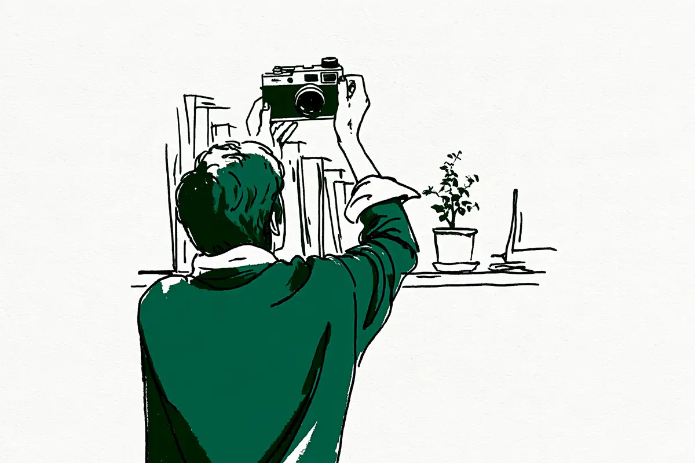

この記事には広告(アフィリエイトリンク)が含まれます。
現在地: 続けるか迷ってる
カメラが続かない・飽きた人のその後と、また撮り始めたきっかけ

カメラが続かない、飽きた、という声を64人分読み、止まった時期を書いた44人のその後を並べると、やめた・止まったまま・また撮り始めた・細く続けている、の4通りに分かれました。また撮り始めた人のきっかけはばらばらで、新しくカメラを買って戻った人も、手元に残していたカメラで戻った人もいます。全部手放した6人のうち4人は、また買ったか、買おうとしていました。
この記事は、もう持っていて撮る回数が減ってきた人向けです。買う前にやめとけと言われる理由を知りたい人はカメラ趣味はやめとけ?へ、重くて持ち出さなくなった人は一眼レフが重くて使わなくなった…へどうぞ。私はカメラを持っていないので、noteと知恵袋と個人ブログで本人が書いたものを人単位で数えています。分け方は私の読み方で、各節の出典リンクから元の文章を確かめられます。
カメラが続かない・飽きた人のその後は4通り(早見表)
| その後 | 止まったきっかけ → その後どうしたか(1人の例) |
|---|---|
| やめた | 持ち出す回数が減り、スマホの画質で十分になった → カメラもレンズも全部売った(Ponさん) |
| 止まったまま | ほかの趣味が面白くなった → カメラは眠ったまま。また撮るかもとも、今はほかの趣味に夢中とも書いている(知恵袋の質問者) |
| 止まって戻った(戻る予定を含む) | スマホで十分と思っていた → もらったチケットのプロレス観戦に、13年前に買ったカメラを持ち出した(かんゆいさん) |
| 細く続けている | 子どもが生まれて撮影に出かける頻度が減った → 出かけられない日は家の中で1枚だけ撮る(ajinocoさん) |
読んだ64人のうち、止まった時期を自分のこととして書いたのは44人です(やめかけ・立場がはっきりしない人を含む)。私の読み方で、やめた5人、止まったまま5人、止まって戻った24人、細く続けている10人に分けました。残りの20人は、撮り続けていると書いた人(停滞した時期を書いた人も含む)で、続けるコツの節で使っています。戻った24人には、戻る予定の段階の人が3人、フィルム時代の話が2人、同じ人かもしれない知恵袋の回答者が2人(表記が違うので別に数えました)入っています。
人数には集め方の偏りがあります。noteの検索語に「カメラ 再開」「カメラ 復帰」「写真教室 通い始めて」「フォトウォーク」などを使ったので、戻った人と続けている人の報告が集まりやすい材料です。知恵袋は飽きた? やめた? という質問に答える形なので、止まった側が出やすくなっています。戻った人の数が多いことに意味はありません。
止まったきっかけは、仕事や子育ての忙しさ、スマホで十分になった、撮るものがなくなった、設定が分からない、など人それぞれでした。理由を数えるのはこの記事の目的ではないので、ここでは数えていません。
飽きた・撮らなくなった人へ、読んだ声にあった3つの形と、私からの提案1つ
順番に試す手順ではありません。読んだ中にあった形を3つ、最後に私からの提案を1つ並べます。
- 何もしないで置いておいた。 離れていた間は何もせず、ふと持ち出した人が2人(すぎっちさん・Tokyo Street PIXさん)。棚に並べたまま置いた人、眠ったままの人もいます(置いておく)
- 用事やイベントに、手元のカメラを持っていった。 かんゆいさん・しらすさんの2人がこの形でした。ほかのきっかけはまた持ち出したきっかけの節に
- 家の中で1枚だけ撮った。 細く続けているajinocoさん1人の例です(細く続けている人の節)
- 売るか決める前に、相場だけ見る。 これは読んだ中にはなく、私からの提案です。売ると決めたあとに査定額を比べた人は2人いました(aimaさん・ロコさん。売る前に無料でできること)
飽きたカメラをまた持ち出したきっかけ
止まって戻った24人のうち、戻ったきっかけを書いていたのは9人で、中身はばらばらでした。私の分け方です。
- もらったチケットのプロレス観戦(かんゆいさん)、雨上がりの買い出し(しらすさん)
- 仕事で写真が必要になった(kouさん)、店の口コミ投稿に写真が要る(知恵袋の回答者)
- 自分の作品をきれいに撮りたい(yoshinoさん)、祖父母を撮った(えびちゃんさん)
- 昔の写真を見返した(もけさん)、子どもが生まれる(知恵袋の質問者、これから)、結婚(知恵袋の回答者、フィルム時代)
残りの15人は、外の用事や出来事のきっかけは書いていません(ふと持ち出した人、考え方を変えた人、修理した人などです)。
どのカメラで戻ったかも数えました。手元に残していたカメラで戻った人が12人(修理した人、残ったレンズで撮った人を含む)。新しいカメラを買って戻った人が7人、買う予定の人が2人、書いていない人が3人です。新しく買った7人のうち3人は、一度全部手放してから買い直した人で、やめた人の節にまとめました。
手元のカメラで戻った人。 2013年に買った一眼レフ(鏡を使ってのぞくタイプのカメラ。言葉の意味)がしばらく眠っていたかんゆいさんは、前日までスマホで十分だと思っていたそうです。プロレス観戦のチケットをもらい、充電器を買い直して持ち出しました。
結果、1,900枚撮った。
仕事が忙しくカメラから離れていたしらすさんは、妻との買い出しの日に持ち出しています。
「せっかくの雨上がりだし」と、久しぶりにカメラをバッグに忍ばせて。
シャッターを切るたびに、忙しさで荒れていた心が落ち着いていった、と続きます。えびちゃんさん(今はプロのカメラマンで、通った教室の講師も務めた方です)のきっかけは、押し入れに放置していたカメラで祖父母を撮ったことでした。そこからオンラインの写真教室に入っています(えびちゃんさんの教室の思い出)。花粉症の悪化で撮影の時間が取れなくなっていたポッピロさんは、10年以上前の機材のまま再開しました(ポッピロさんの古いレンズの話)。
新しいカメラを買って戻った人。 高校卒業と同時に撮らなくなったkouさん(商品の紹介もしているnoteです)は、34年後に仕事できちんとした写真が必要になりました。量販店の展示品を買っています(kouさんの34年ぶりの話)。1年ほどカメラに触らず、店の口コミ投稿のために新しい機種を買って再開した知恵袋の回答者もいました(やめようかなと思っている人の相談)。この方が止まった理由は重さと撮影後の補正で、重さの話は一眼レフが重くて使わなくなった…に任せます。10数年前にオート(カメラ任せの設定)のまま使わなくなったyoshinoさんは、ハンドメイド作品を撮るために夫のカメラを借りて講座を受けました。そのあと自分の機種を買っています。
買って戻ることがゴールとは限りません。yoshinoさんは、外では設定に悩んで持ち出しが減ってきた、と書いています。口コミ投稿のために買い直した知恵袋の回答者も、新しい機種への不満でまた撮る気が失せかけたそうです。2人とも、戻った先でもう一度止まりかけた例です。設定の話はこの記事にはないので、カメラのPモードとは?と写真が暗い・白っぽい…露出補正に分けました。
きっかけがなく、ふと持ち出した人
特別なきっかけを書いていない人もいます。すぎっちさん(note)は、写真に意味を求めすぎて疲れ、ほとんど撮らない時期があったそうです。別の記事では買って後悔して手放した話も書いている方で、一眼レフ・ミラーレスを買ったけど後悔…に出てきます。
ただ、ふと持ち出してみただけだった。
路上写真家のTokyo Street PIXさん(自分の本の紹介もしているnoteです)は、2018年頃から1〜2年、カメラに一切触らなかったそうです。写真集も見なかった、と。記事の題名は撮るものがない人に向けたもので、本人の結論は売らないで、です。ある日、小さな写欲(撮りたい気持ち)に気づいて防湿庫(カビを防ぐための保管庫)から出し、充電して触りました。
やっぱり自分にはカメラが必要だと思った瞬間でした。
待てば戻る、とは書けません。すぎっちさん自身が別の記事で、気持ちが戻るまで待つのは、実質的にやめる選択に近い、と書いています(すぎっちさんの、理由を探さなくていいという記事)。
細く続けている人は、何をしていたか
止まりきらず、量を減らして続けている人が10人います。子育て中の会社員ajinocoさん(カメラ関連の商品の紹介もしているサイトです)は、子どもが生まれて撮影に出かける頻度が減りました。それでも、完全にやめることはしなかったそうです。
出かけられない日は家の中で一枚だけ撮る。
住職のm_bozuさんは、仕事で余裕がなくなると、カメラに触れることさえしなくなるそうです(m_bozuさんの撮れない日々)。撮れない時期を撮れないまま置いていて、やめてはいません。
二十数年、自分が撮りたい写真がなかったCICAMERAさんは、頼まれた撮影や日常の写真は撮り続けていました。知人の一言で火がつき、一眼(レンズを交換できるカメラ)を注文して、そのあと撮りたいものが見つかりました(CICAMERAさんの二十数年ぶりの話)。
置き場所や機材を変えた人の、反対の例もあります。野鳥ブームが落ち着いてカメラの出番が減ったなかじさん(商品の紹介もしているnoteです)は、軽い機種と扉式の防湿庫に替えて、持ち出す回数は増えました。
しかし、撮影枚数はさほど増えていない。
出かけた先で撮る習慣がついていないから、というのが本人の分析です。
検索でよく見る続けるコツを、実際にしていた人
検索すると、仲間を作る・SNSを見直す・毎日1枚撮る・テーマを決める、といった続けるコツが並びます。読んだ64人の中で、実際にそれをしていた本人の例を短く並べます。集めるときに「フォトウォーク」「写真教室」「撮影会」の語を使ったので、続けている人の例が集まりやすい材料です。
仲間・フォトウォーク(集まって歩きながら撮る会)。 フィルム中心のゆーやchさんは、会社の同僚に誘われて初めて参加し、カメラ友達も初めてだったそうです。
フォトウォークまじでおもろかったです。
2024年にカメラを始めたオレソトさんは、noteで知り合った人とフォトウォークを企画しています(オレソトさんの東京フォトウォーク)。
SNSの使い方を変えた。 鉄道写真のふぃるとれさんは、評価がつかずにSNSへの投稿を約5年やめました。自分のために撮ってから、数字を求めない形で再開しています(ふぃるとれさんのSNS再開の話)。止まって戻った側では、mamiyaさんが、上手くなろうという気持ちを手放し、SNSで自分から反応する側に回ると、持ち歩いて撮る気になったそうです(mamiyaさんの飽き性の備忘録)。人の目が気になって持ち出せない人の工夫はカメラを持ち歩くのが恥ずかしいときにあります。反対向きに、SNSを使って続けた人もいます。9年続いているYAMADA_TARO_CHANさんは、三日坊主にしないために毎日1枚投稿すると決めた人です(YAMADA_TARO_CHANさんの9年の話)。
撮るものがないとき: テーマ・季節・光
猫の成長を記録し、季節の変化を写していると飽きることが少ない、という知恵袋の回答者がいます(多くの人が飽きるのは何故かという質問)。季節の花が咲く公園を調べて行く人と、歳時記から撮るものを探す人もいました(何を撮ればいいか分からないという質問)。20年続けているKOUさんは、被写体ではなく光を探すそうです(KOUさんの光を探す話)。細く続けている側では、とっとさん(カメラのハウツーブログも運営している方です)に、撮るものがないと思った時期がありました。子どもの毎日の変化を撮るようになって、楽しさを思い出したそうです(とっとさんの撮るものがない話)。
写真教室・講座
止まって戻った人で写真教室や講座を使ったのは3人です。うち2人は、教室や写真の仕事をしている側の人です。写真教室で戻った人(写真教室を運営している方です)は、15年前に奮発して買った一眼レフをオートでしか撮れずに手放しました。5年前にカメラを買い直し、写真教室に通って楽しむ心を知り、少しずつ写真が好きになれた、と振り返っています(写真教室を開いている方の挫折の話)。えびちゃんさんは、オンラインの写真教室の月1回の面談に向けて撮りに行くようになりました。写真を仕事にしていないyoshinoさんは、オンライン講座を受けたあと、また持ち出しが減っています。教室に通えば戻る、とは読めません。
反対の例もあります。35年撮り続けた澪さんは、最後の5年で写真サークルに参加し、評価される型を知ったそうです。それとは別に、子どもの運動会で撮ることに夢中だった自分にも気づきました。
運動会そのものを味わっていなかった。
それがカメラを置いた理由で、いまは自分の目で見るようになったそうです。
飽きたカメラ、売る?置いておく?
読んだ中にあった選択肢を、お金のかからない順に並べます。どれかを勧めるものではありません。重さで使っていない機材をどうするかは、一眼レフが重くて使わなくなった…にも置いた人・売った人の声があります。
置いておく
売らずに置いたまま、という人は何人もいました。手元に残していたカメラで戻った12人も、この形から戻っています。澪さんは、カメラを置いた理由を書いたあとで、リビングの棚にカメラが今も並んでいることも書いています(澪さんのカメラを置いた理由)。特売で買ったカメラがほったらかしになり、売るか撮りたいものを探すか迷う質問者もいます(特売でカメラを買った人の相談)。
置いておくことへの反対意見もあります。知恵袋には、置いていても値段は下がるだけ、という回答がありました(売却についての質問への回答)。助言で、本人が売った話ではありません。Tokyo Street PIXさんは、本人も1〜2年触らずに置いていた人で、読者に向けてこう勧めています。
だから、カメラをやめてもカメラは売らないでください。
ほかの趣味が面白くなり、カメラもレンズも眠ったままになった知恵袋の質問者は、補足でこう書いています。
また撮るときもあるかもしれません。
すぐあとに、しかし今はほかの趣味に夢中だ、と続きます。
一部だけ売る
1人の例です。カメラ歴7年のロコさんは、一向にうまくならないと煮詰まってカメラから遠ざかっていた時期に、出番の少ないレンズ2本を店で売りました。2つの店で査定額を比べたとありますが、店名は書かれていません。
防湿庫の中もスッキリしたし、なんかカメラ小物を色々と整理し始めたりなんかしてヤル気が出てきました。
残ったレンズで近所のアジサイを撮り、再開しようかと思っている、という段階の話です。
カメラをやめた人: 全部売った人、手放してまた買った人
カメラを全部手放した人は、64人のうち6人でした。うち4人は、また買ったか、買おうとしています(買い直したのは3人)。売って離れたまま、と書いたのは2人です。やめた5人の内訳は、全部売った2人、売る決断・売る予定の2人、売らずに置いてやめた澪さんです。
売って離れたままの2人です。カメラに200万円以上使ったというPonさん(2026年の記事で、本人の見積もりです)は、持ち出す回数が減り、そこまでして撮りたいのかと考えて、全部売りました。
いや、ただの高い勉強代。笑
ただ、後悔しかないわけではない、と続き、今はiPhoneで撮っています。分割払いは売却後も残ったそうです。学生時代から一眼レフを使ってきたaimaさんは、育児で抱っこのときにカメラが邪魔になり、スマホの画質で十分になって、まとめて手放しました。
相場がよく分からなかったので、相見積もりから始めました。
フリマは未練を断つために避けて買取に出し、後悔はない、また欲しくなったらもっといいものを買う、と書いています。業者名はありません。
手放したあとで、また買った・買おうとしている4人です。もけさんは、スマホの性能が上がって持ち出さなくなり手放したあと、昔撮った娘の写真を見返しました。
だから、もう一度カメラで撮りたいと思った。
高価な機種を買っています。カメラ歴約10年の白麦さんは、ほかの遊びに時間とお金が移って小さい1台も売り、一眼がゼロになりました。しばらくして、また欲しくなったそうです(白麦さんの買い直しの話)。普段のバッグに入る薄い単焦点(写る範囲が決まったレンズ。言葉の意味)つきの機種を買っています。写真教室で戻った人も、手放してから5年前に買い直しました。知恵袋には、以前の機種を手放して手元になく、また買いたいと相談している人もいます(再開したい人のおすすめ機種の相談)。
踏ん切りがつかなかった人もいます。飛行機を撮っていた知恵袋の質問者は、4年使っていない機材を売るか迷い、何かのきっかけでまた使い始めるかもしれない、と書いていました(売却についての質問)。安い買い物ではないので、と。補足では出品を決めています。フィルムカメラに飽きて売ろうとした質問者への回答も読みました。買うときは高くても売るとジャンク、中古は買うと高いが売ると安い、という助言が並んでいます(フィルムカメラを売る人の相談)。
売ったあとで戻るなら、買い直しの費用がかかります。全部手放した6人のうち3人がその費用を払っていて、1人はこれから払おうとしています。
売る前に、無料でできること
売ると決める前でも、相場を見ておくことはできます。中古店の買取価格表を見る、同じ機種が売れた価格を検索する、スマホの写真を大きくプリントして満足できるか比べる(知恵袋の回答にあった方法です。その回答)、という順です。読んだ中で査定額を比べた人(aimaさん・ロコさん)は、どちらも売ると決めたあとでした。決める前に価格表を見るという方法は、私からの提案です。
下のリンク先では、査定の申し込み方と、売らなかった場合の送料やキャンセルの条件が確かめられます。
買取の会社によって、条件や対象の機材は違います。査定後に売らない場合の送料やキャンセルの条件も、サービスごとに違います。福ちゃんの公式ページでは、出張買取の査定料・キャンセル料は無料、宅配買取で返送を頼む場合の送料は自分持ち、未成年からの買取はしない、と案内されています(2026-10-09に確認)。利用する前に、それぞれの公式サイトで条件を確認してください。
使わなくなったままの人にも、やめた人にも、その先があった
止まったまま、と分けた5人のうち、その後を書いたのは、持て余していたカメラで知人を撮ってうまく撮れず、自分に合うのは別の活動だと考えたsaeさんだけです。やめた5人のうち、後悔だけを書いた人はいませんでした。戻った24人の中には、34年後に戻った人も、高校と就職で2回離れ、大学と結婚を機に戻った知恵袋の回答者もいます(飽きて放棄した回数を聞く質問)。離れていた長さを書いた人では、1年ほどから34年までばらばらでした。今止まっている人が表のどの行に行くかは、読んだ範囲からは分かりません。分かったのは、戻った人のきっかけがそれぞれ違ったことと、やめた人も戻った人も、自分の言葉でその後を書いていたことです。
次に読むなら
この記事で読んだ67件
本文で使った38件、64人の数に入れたが本文では使わなかった27件、一般論・助言として読んだ2件に分けています。同じ人の記事が複数あるので、件数と人数は一致しません。
本文で使った38件
- note(すぎっち)「カメラを使わなくなった人が、だいたい感じている違和感」(止まって戻った、2026年。有料メンバーシップの案内あり)
- note(すぎっち)「写真を撮らなくなった理由を、探さなくていい」(同じ人の一般論、2026年)
- note(ハマダアヤノ)「一眼レフカメラを挫折した経験があるからこそ名古屋で初心者教室を開催している話」(手放して戻った、2025年。写真教室の運営者、自分の教室への案内あり)
- note(yoshino)「カメラを始めのは？？過去の挫折から再挑戦へ」(止まって戻り、また減った、2026年)
- note(sae)「2度目のカメラ挫折」(止まったまま、2026年)
- note(しらす)「雨上がりの街と、久しぶりのカメラ。」(止まって戻った、2026年)
- note(かんゆい)「13年前に買ったEOS 7Dを久しぶりに持ち出したら、1900枚撮っていた。」(止まって戻った、2026年)
- note(kou / q-cafe)「34年の時を経てまた写真を撮り始めた話 ［ #ハマった沼を語らせて ］」(止まって戻った、2026年。Amazonの商品リンクあり)
- note(Tokyo Street PIX)「カメラなんてやめてしまえばいい」(止まって戻った、2026年。自著のリンクあり)
- note(mamiya)「5.飽き性の備忘録 写真を上手になる事を辞めた」(止まって戻った、2026年)
- note(ロコ)「【アラカン・カメラレンズを売ったらスッキリした話】」(レンズを一部売って再開予定、2026年)
- note(Pon)「カメラ沼にハマって200万円以上使った僕が、全部売ってiPhoneで撮るようになった話。」(全部売ってやめた、2026年)
- note(もけ)「今の娘は、今しかいないから、昔、カメラを手放した私が、ライカを買った」(手放して戻った、2026年)
- note(白麦)「高性能なカメラに疲れて、Nikon Zfをスナップ機にした話」(手放して戻った、2026年)
- note(えびちゃん)「4年半前、生徒だった僕が、写真教室のメンターとして戻ってきた大切な思い出📸」(止まって戻った、2026年。今はプロのカメラマン、元教室講師)
- note(aima)「カメラを手放した日のこと」(全部売ってやめた、2025年)
- note(澪)「35年撮り続けた僕が、カメラ📷を置いた理由」(売らずに置いてやめた、2026年)
- note(ポッピロ)「古いレンズと再び遊ぶ」(体調で止まり、古い機材のまま戻った、2026年)
- note(m_bozu)「写真を撮れない日々」(細く続けている、2020年)
- note(とっと)「「撮るものがない…」カメラ初心者が見落としている“写真の楽しみ方”の話」(細く続けている、2026年。後半は有料、カメラのハウツーブログも運営)
- note(なかじ)「防湿庫を買った。でも、写真はまだ増えていない」(細く続けている、2026年。Amazonの商品リンクあり)
- note(CICAMERA)「手汗が止まらなくなった話と、二十数年ぶりに撮りたいものができた話。」(細く続けて再燃、2026年)
- note(ゆーやch)「久しぶりにデジタルカメラを持ち出した」(続けている、2026年)
- note(オレソト)「noteの写真仲間と一緒に東京フォトウォークして推しに会う夢が一度に叶った日の話」(続けている、2026年)
- note(ふぃるとれ)「【エッセイ】長年写真を閉じ込めていた私が、フィルムを機にSNSを再開したわけ」(続けている、SNSは休止していた、2026年)
- note(YAMADA_TARO_CHAN)「日常を、写真に残す。｜写真を撮り続けて、見えてきたもの。」(続けている、2026年。仕事の撮影あり)
- note(KOU)「「最近、撮るものがない」と思ったら、被写体ではなく光を探してみる」(続けている、2026年)
- ajinocamera「カメラが続かない人へ――頑張らずに続けることで見えてくるもの」(細く続けている、2026年。広告表記あり)
- Yahoo!知恵袋「カメラは飽きませんか。」(質問者は止まったまま、2018年)
- Yahoo!知恵袋「カメラって飽きませんか？」(ベストアンサーは2回離れて戻った、2020年。フィルム時代の話を含む)
- Yahoo!知恵袋「カメラを買っても多くの人が飽きるのは何故ですか。」(回答者は続けている人・細く続けている人、2023年。質問文の数字は出典がないため使っていません)
- Yahoo!知恵袋「フィルムカメラについて質問です。」(質問者は売る予定、回答は助言、2024年)
- Yahoo!知恵袋「そろそろ カメラの趣味を やめようかなと思っている ひといますか？」(ベストアンサーは戻ってまた失せかけ、2022年)
- Yahoo!知恵袋「カメラ再開しようと考えています。」(質問者は子どもの誕生で再開予定、2023年)
- Yahoo!知恵袋「久しぶりにカメラの趣味を再開したいのであなたのおすすめの一眼レフ教えてください。」(質問者は手放して再開予定、2024年)
- Yahoo!知恵袋「一眼レフカメラとミラーレスカメラの売却について。」(質問者は出品を決断、回答は助言、2023年)
- Yahoo!知恵袋「趣味が無かったので一昨年の年始にニコンの特売でカメラを買いました。」(質問者は止まったまま、2021年)
- Yahoo!知恵袋「カメラ初心者です。何を撮ればいいか分かりません。」(回答者は続けている、2026年)
64人の数に入れたが、本文では使わなかった27件
- note(ハマダアヤノ)「【初心者さん向け】カメラを挫折しないで続ける方法について考えてみた」(同じ人の助言、2025年。自分の教室への案内あり)
- note(すぎっち)「写真から少し離れている時期に、無理に考えなくていいこと」(同じ人の一般論、2026年)
- note(Daisuke)「【ガジェット（カメラ）】面倒でも、撮り始めなければ写真は撮れない。」(止まって戻った、2026年)
- note(松本勝)「久しぶりにカメラとお出かけするよって話【毎日note:re 8日目】」(壊れて止まり、直して戻った、2026年。買取が本業、副業サイトのリンクあり)
- note(ひでやま)「大切なカメラを手放します」(1台だけ売って続けている、2026年)
- note(SHU)「久しぶりに娘とのお出かけでa7CⅡを持ち出したら楽しく撮影できた話」(細く続けている、重さ寄り、2026年。Amazonの商品リンクあり)
- note(TAKU)「平日はGR III、休日はZf。カメラの使い分けで撮る量が増えた話」(続けている、2026年。Amazonの商品リンクあり)
- note(sho)「写真がうまくなりたい。だけでは撮らなくなった。」(続けている、停滞期あり、2026年。写真を教える立場)
- note(sho)「カメラ歴16年。GFX100 IIとレンズ4本を手放して、ライカM11-Pと50mm一本にした理由。」(同じ人、2026年)
- note(sho)「同じ写真ばかり撮っていると、少し飽きる。」(同じ人、2026年)
- note(sho)「あなたの機材で、飽きずに写真を続けるための3つのステップ」(同じ人、2025年)
- note(イノウエノリユキ)「私はいつ写真をやめるんだろう」(続けている、2026年)
- note(iwai)「Xやめました。写真をもっと楽しむために。」(続けている、2026年。写真集の販売あり)
- note(Yaas)「「評価されるために撮る」をやめたら、写真が楽になった」(続けている、2026年)
- note(ごんた)「飽き性だけど、なんだかんだカメラ楽しんでます。」(細く続けている、2025年)
- note(レンズと鍵盤と少しの魔法)「写真教室に通い始めてから、少しずつ変わったこと」(続けている、2026年)
- note(Kaichi)「写真を続けるための、一つの方法。」(続けている、2025年)
- note(多幸哲哉)「防湿庫にしまったカメラは、使わなくなる。――カメラを保存する棚ではなく、使うための展示棚を作りたい」(続けている、2026年)
- note(YocoraCreative)「なぜ今もカメラを続けているのか」(続けている、2026年。写真が仕事)
- ajinocamera「カメラを使わなくなったあなたへ――「撮りに行かない写真」のすすめ」(同じ人、広告表記あり)
- Yahoo!知恵袋「カメラ好きだったけど、飽きた人居ます？」(回答者は止まって戻った人2人、2024年)
- Yahoo!知恵袋「カメラは飽きるのが普通ですか。」(回答者は何度も止まって戻った人と細く続けている人、2019年)
- Yahoo!知恵袋「もうカメラの趣味はやめよう。と思ったのはどんなときですか？」(回答者は約40年前に壊して3年離れた人、続けている人ほか、2023年)
- Yahoo!知恵袋「そろそろ カメラの趣味を やめようと 思っていますか？」(ベストアンサーはやめかけ、2022年)
- Yahoo!知恵袋「サブカメラのおすすめ教えてください。」(質問者は止まって戻った、重さ寄り、2024年)
- Yahoo!知恵袋「フイルムカメラを再開しようと考えています。」(質問者は細く続けている元スタジオ勤務、2013年)
- Yahoo!知恵袋「趣味にカメラを始めたいですが、どうですかね？挫折した方の意見、今も続けてる方の意見もらえると嬉しいです。」(回答者は続けている人と、売却をすすめる助言、2024年)
一般論・助言として読んだ2件(体験談には数えていません)
- note(あかうさ)「撮らなくなってしまう心理」(一般論、2026年。Amazonアソシエイトの表記あり)
- note(ゴーゴーシンゴ)「「撮る気力」がないなら、いっそカメラなんて辞めてしまえばいい。」(一般論、2026年。別のブログの記事をカメラ趣味はやめとけ?で使った書き手)
引用は2026-10-14時点で各ページを閲覧して確認しました。